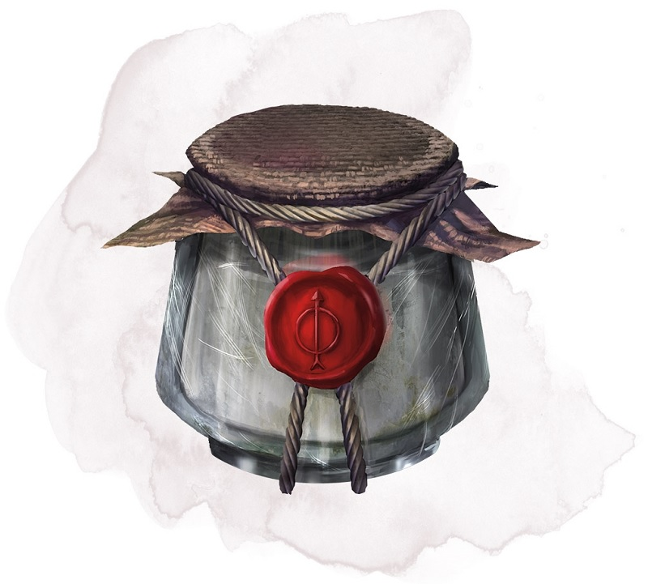

Baume de Keoghtom
Objet merveilleux, peu commun
Ce pot de verre, de 7,50 cm de diamètre, contient 1d4 + 1 doses d'un mélange épais qui sent vaguement l'aloès. Le pot et son contenu pèsent 500 g. Au prix d'une action, une dose de l'onguent peut être avalée ou appliquée sur la peau. La créature qui le reçoit récupère 2d8 + 2 points de vie, cesse d'être empoisonnée, et est guérie de toute maladie.
Dungeon Master´s Guide (SRD)
